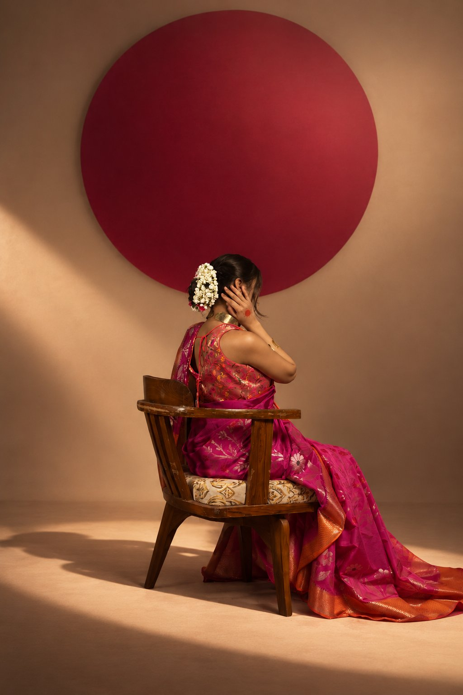

Colour story
Colour, woven.
Every shade here is sampled from a saree in the collection. Hover to see the silk it came from.
Shop all sarees- Rani
- Marigold
- Chartreuse
- Wine
- Indigo
The craft
The Art of Banarasi
Banarasi weaving is defined by its silk, its zari and its motifs — each one set on the loom, thread by thread, by weavers in Varanasi. It is slow, exacting work. It is also why no two of our sarees are quite alike.
Discover the craft